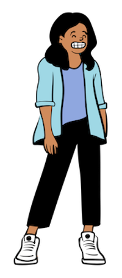

 Hello and welcome to my personal website! I'm Amy, a fourth-year student at UC Berkeley studying Electrical Engineering and Computer Sciences. My journey has led me to a profound interest in product innovation and design, alongside my technical pursuits. This platform is a glimpse into my academic exploration and showcases my passion for combining technology and creativity. Thank you for visiting, and I hope you find my content engaging and insightful.